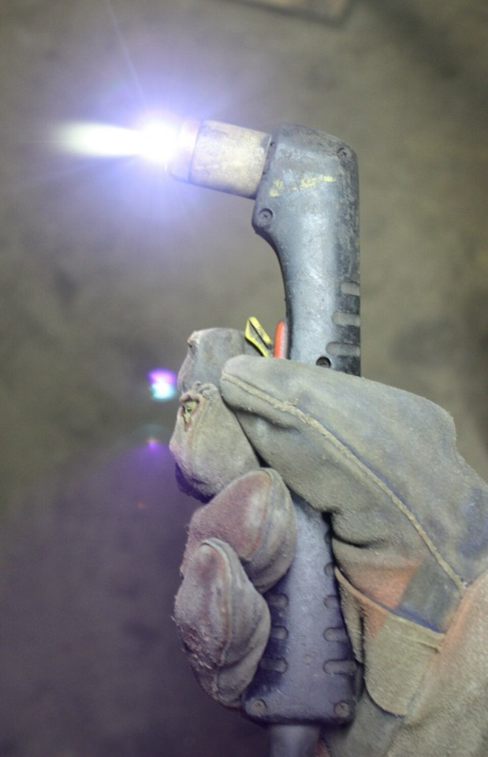

Triage a plasma cutter that will not start
Separate the torch, air supply and power-source branches before quoting a repair.
Find the parts the operator can describe
The metal-cutting torch has an electrode and nozzle. A retaining cap holds the consumable stack. Some units rely on shop air; other models have an internal compressor. Start with a photo of the nameplate and the front display. Ask whether the fault occurs at startup, when air begins to flow or only after the torch is hot. Record the full fault and which set of consumables was just fitted.

Photo by Thomas S., resized with labels added. Original photo · Public domain.


Photo by Tim Drivas, resized. Original photo · CC BY 3.0.

Watch a real fault walkthrough · Identify the front-panel indication and the consumable stack. Hypertherm distinguishes a 0-30 fault from an air-pressure indication. Its code descriptions apply to the Powermax models in the videos. Powermax 0-30 troubleshooting · Powermax low air pressure.
Practise separating a trigger fault from a missing permissive
Use only a switched 3×AA battery pack, two 330 Ω resistors, two red LEDs, two switches and a breadboard. Make two branches. In the first, connect battery positive → trigger switch → resistor → LED → battery negative. In the second, connect the node after the trigger switch → second switch labelled AIR OK → resistor → second LED → battery negative. The first LED shows a trigger request and the second shows the request passed the air condition. The actual cutter stays disconnected. Leave its enclosure closed and use no compressed air or arc in this lab.
| Training fault | Request / accepted LEDs when you pull the trigger | Next observation |
|---|---|---|
| Trigger wire disconnected | Off / off | Turn the trainer off and use continuity to check the isolated trigger switch and wire. |
| Air permissive open | On / off | Check which condition is absent. A real out-of-spec air supply belongs to the air branch. |
| Both switches closed | On / on | The trainer passed the two conditions. A real unit still has further protections and power stages. |
For a documented Powermax45 XP case, work through P102 gas delivery and cold torch service. It shows how to distinguish a pressure reading at rest from one measured while air is flowing.
Write a fabrication-shop intake and choose the next job
Air indication under flow. An equipped operator verifies inlet pressure and flow using the model procedure and checks restrictions, moisture and filter condition. An idle gauge reading is only one observation. Record the manufacturer’s required flow and whether supply holds under the specified test.
Consumable warning after a tip change. Check the part numbers and review installed order against the exact torch manual. The qualified technician isolates power and air before handling the torch, and checks the retaining cap and lead for damage. Matching the right consumables is a separately quotable service.
Fault persists with documented checks passed. Send the authorised or equipped repairer the full code, model, torch family and proven observations. Cap-sense devices and other protections stay in circuit throughout service. A qualified operator records the specified function and test cut under the actual service procedure before release.
Hypertherm fault guide · Torch lead and consumables checks · Printable job sheet.